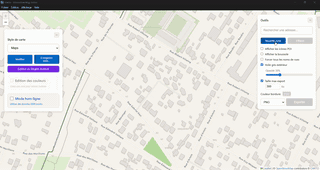

Créez des cartes SVG personnalisées à partir de données OpenStreetMap. Exportez en haute qualité pour l'impression ou l'édition dans Inkscape.
Aperçu de l'application

Dessinez des zones, ajustez les points par glisser-déposer, et arrondissez les angles avec la spline.
Choisissez parmi les styles Maps, OpenStreetMap, ou créez votre propre palette de couleurs.
Colorez des bâtiments, routes ou espaces naturels un par un. Sélection au clic ou par polygone.
Fichiers vectoriels avec calques Inkscape séparés : routes, bâtiments, eau, parcs...
Abréviations automatiques (Rue → r., Avenue → av.) et retour à la ligne si nécessaire.
Accès à toutes les données OSM : routes, bâtiments, parcs, cours d'eau, POIs...
Chargez des fichiers .osm locaux pour travailler sans connexion Internet. Idéal pour les zones sans réseau.
Disponible sur Windows, macOS et Linux. Aucune installation requise (version portable).
Choisissez la version correspondant à votre système d'exploitation
Utilisez la barre de recherche pour trouver une adresse, ou naviguez manuellement. Zoomez au niveau 15+ pour charger les données.
Cliquez sur "Nouvelle zone" puis cliquez sur la carte pour ajouter des points. Maintenez Ctrl pour déplacer la carte. Cliquez sur le point vert pour fermer. Ajustez les points par glisser-déposer, double-cliquez sur une ligne pour ajouter un point ou sur un point pour le supprimer.
Choisissez un thème prédéfini ou modifiez les couleurs de chaque élément : routes, bâtiments, parcs, eau...
Cliquez sur "Exporter SVG" pour générer un fichier vectoriel. Ouvrez-le dans Inkscape pour des modifications avancées.
Tout ce qu'il faut savoir pour maîtriser Carto
Personnalisez le rendu cartographique avec des règles de style précises
line-style: none masque complètement le contour d'un élément.